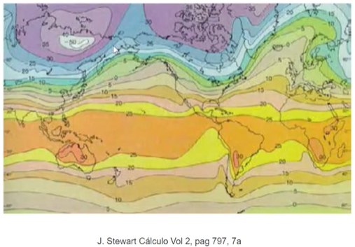
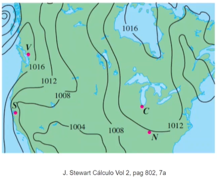

Atividade: Mapa de contorno
Mapa topográfico: Vocês com certeza já viram mapas como o mapa a seguir.

As curvas do mapa representam pontos que possuem a mesma altura.
Mapa de temperaturas: As curvas do mapa a seguir representam os pontos que têm a mesma temperatura média. Estas curvas se chamam isotérmicas.

Mapa de pressão atmosférica: As curvas do mapa a seguir representam os pontos que têm a mesma pressão atmosférica. Estas curvas se chamam isobáricas.

O que todos esses três mapas que eu já apresentei têm em comum? Que eles são mapas de contorno. As curvas de pontos com as mesmas alturas, as isotérmicas
e isobáricas são curvas de nível.
Atividades
Questão 1:
A profundidade de um poço mineiro vem dada pela equação *(f(x,y)=-\sqrt(4-x^2-y^2))*.
Esboce o mapa de contorno e identifique o nível de profundidade do ponto *((1/\sqrt(2),1/\sqrt(2)))*
onde foi encontrado mineral valioso.
Resolução em vídeo:
Questão 2:
Considere a função *(f(x,y)=In(\frac{x+y}{x-y}))*:
(a) Determine o domínio da função f e faça um esboço. Detalhe as propriedades topológicas
do conjunto domínio: aberto, fechado, limitado, compacto. Justifique sua resposta.
(b) Determine a expressão geral das curvas de nível e esboce o mapa de contorno da função f.
Identifique a curva de nível que passa pelo ponto *((1,\frac{1}{3}))*
(Adicionar botão "Ver Resposta")
Resposta (a):
f é composição de uma função logaritmo e uma racional, portanto o domínio de f é o conjunto
D = *({(x,y)\in\mathbb{R}\mid \frac{x+y}{x-y}>0,x-y\ne 0})*
Sabemos que *(\frac{x+y}{x-y}>0)* se e somente se é verificada uma das seguintes propriedade
*(x+y>0)* e *(x-y>0)*, isto é, *((x,y)\in D_1={(x,y)\in\mathbb{R}^2\mid y>-x,y<\mbox{x}})*.
*(x+y<\mbox{0})* e *(x-y<\mbox{0})*, isto é, *((x,y)\in D_2={(x,y)\in\mathbb{R}^2\mid y<-x,y>\mbox{x}})*.
Portanto, *(D)* = Dom(f) = *(D_1\cup D_2)*. Ele é um conjunto aberto (pois não contem nenhum ponto fronteira),
não é fechado (pois *(D\ne\mathbb{R}^2)* e *(D)* é aberto), ilimitado (pois para qualquer bola *(B_R(0,0))*
existe o ponto *((R + 1,0)\in D)* tal que *((R + 1,0)\not\in B_R(0,0))* e não compacto (pois não é limitado).

Resposta (b):
As curvas de nível da função f são definidas pelas expressões *(In(\frac{x+y}{x-y}) = k)*, para k no conjunto
imagem de f e *((x,y)\in)* Dom(f)=*(D)*. Como f pode pegar qualquer valor real, *(k\in\mathbb{R})*
e *(\frac{x+y}{x-y}=e^k)*, *(V(x,y)\in D)*. Isto é, as curvas de nível k são as retas *((1+e^k)y=(e^k-1)x)*, ou
equivalentemente, *(y=\frac{e^k-1}{1+e^k}x)*. Como *((0,0)\not\in D)*, a origem não pertence a nenhuma curva de nível.
Observamos que a curva de nível *(k=0)* é a reta *(y=0)*. Também se observa que as curvas de nível são retas com inclinação positiva
se *(k>0)*, pois *(e^k>1)*, e com inclinação negativa se *(k<\mbox{0})*, pois *(e^k<\mbox{1})*.
A curva de nível que passa pelo ponto *((1,\frac{1}{3}))* tem nível *(k=f(1,\frac{1}{3})=In(\frac{1+1/3}{1-1/3})=In(2))*. Portanto
será a reta *(y=\frac{e^{In(2)}-1}{1+e^{In(2)}}x=\frac{1}{3}x)*.
A figura abaixo mostra o mapa de contorno da função f, identificando a curva de nível que passa pelo ponto*((1,\frac {1}{3}))*.

Questão 3:
Nos dois primeiros games abaixo você terá que combinar os gráficos com as equações. Verificar os gráficos do que estamos a desenhar antes de desenhar pode parecer tarefa difícil do início. Mas
com o tempo vemos que é uma tarefa extremamente fundamental em Cálculo 2B. Aqui saber os gráficos se torna tão importante quanto saber as resolver as equações.
Para resolver o game abaixo basta arrastar os gráficos e colocá-los nos quadrados correspondentes. Ao final é necessário enviar as respostas para a correção da atividade.
Questionário
Esse é um questionário de múltipla escolha. Logo selecione a resposta marcando ao lado. Ao final clique em obter resultado para a correção das respostas enviadas.